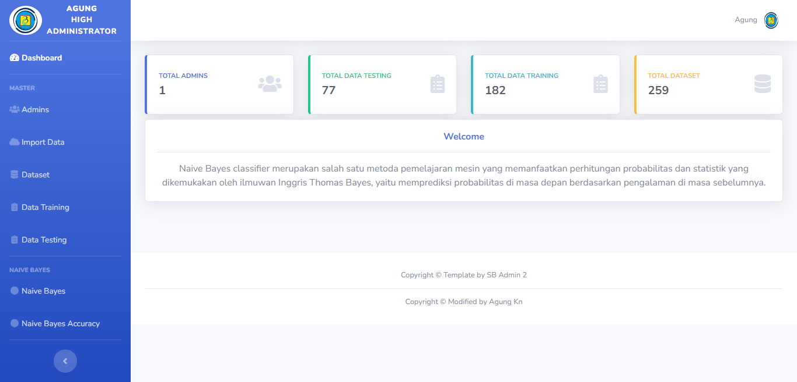

Data Mining : Algoritma Naive Bayes
Program untuk menentukan tingkan pencemaran polusi udara di Jakarta menggunakan metode Naive Bayes Classification.
Naive Bayes classifier merupakan salah satu metoda pemelajaran mesin yang memanfaatkan perhitungan probabilitas dan statistik yang dikemukakan oleh ilmuwan Inggris Thomas Bayes, yaitu memprediksi probabilitas di masa depan berdasarkan pengalaman di masa sebelumnya.